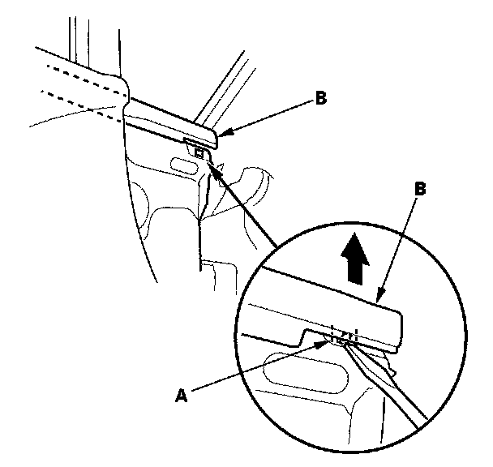
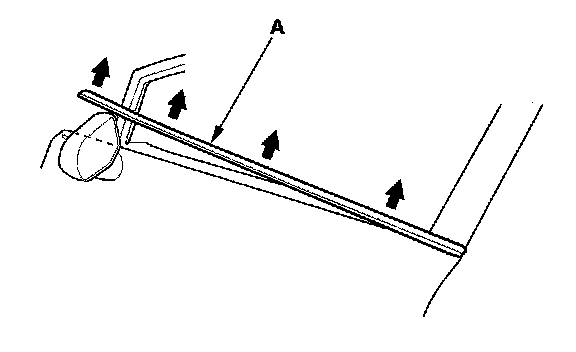
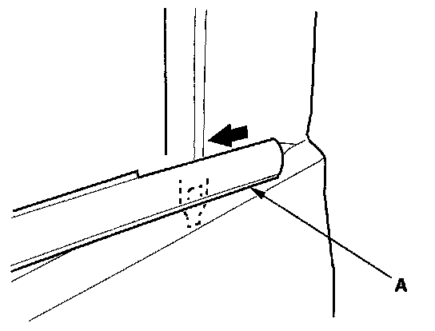
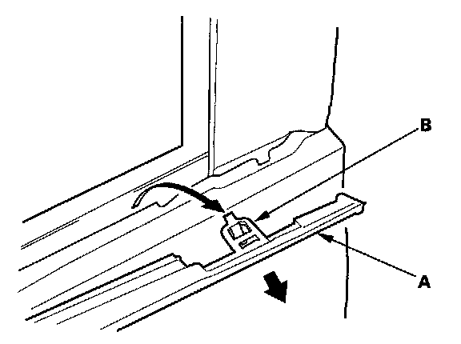
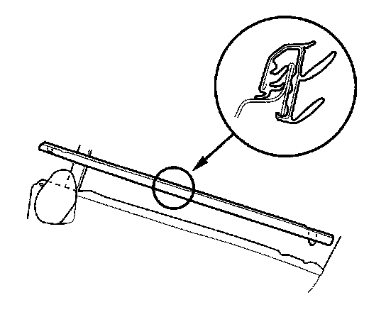

Front Door Glass Outer Weatherstrip Replacement
Front Door Glass Outer Weatherstrip Replacement4-door
NOTE:
- Put on gloves to protect your hands.
- Take care not to scratch the door.
1. Lower the glass fully.

2. Release the front hook (A) from inside of the door, then pull up the front door glass outer weatherstrip (B).

3. Starting at the front, slowly pull up the front door glass outer weatherstrip (A).

4. Slide the front door glass outer weatherstrip (A) forward.

5. Twist the front door glass outer weatherstrip (A) to pull the rear hook (B) out from the inside of the door, then remove the weatherstrip.

6. Push the clip portions of new front door glass outer weatherstrip into place securely.